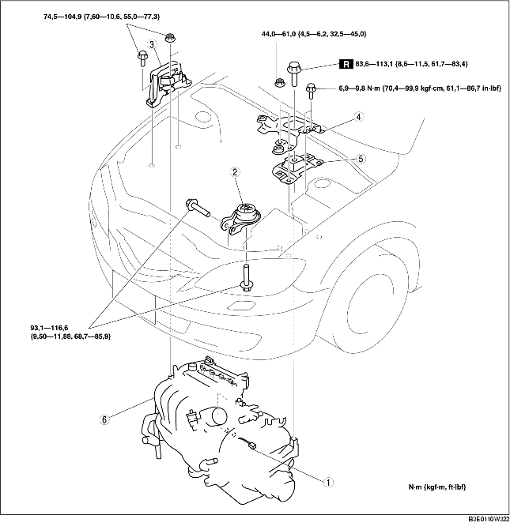

1. Déposer la plaque de trou de bougie. (voir la section DÉPOSE/REPOSE DE PLAQUE DE TROU DE BOUGIE [LF].)
2. Déposer le flexible d'air et composant de filtre à air. (voir la section DEPOSE/REPOSE DE SYSTEME D'ADMISSION D'AIR [LF].)
3. Déposer le couvercle de batterie, le conduit de batterie, le collier de batterie, la batterie et le support de batterie. (voir la section DEPOSE/REPOSE DE BATTERIE [LF].)
4. Débrancher le flexible de carburant. (Voir la section DEPOSE/REPOSE DE CONNECTEUR DE DEBLOCAGE RAPIDE [ZJ, Z6, LF]..)
5. Déposer les pièces suivantes.
6. Purger l'ATF (ATX) ou l'huile de boîte-pont (MTX) (voir la section REMPLACEMENT D'HUILE DE BOITE-PONT [F35M-R].) (voir la section REMPLACEMENT DE LIQUIDE DE BOITE-PONT AUTOMATIQUE (ATF).)
7. Purger le liquide de refroidissement moteur (voir la section REMPLACEMENT DE LIQUIDE DE REFROIDISSEMENT MOTEUR.)
8. Débrancher le flexible à dépression du frein.
9. Déposer les pièces suivantes.
10. Débrancher le flexible de chauffage.
11. Débrancher les flexibles de radiateur supérieur et inférieur.
12. Débrancher le silencieux principal (voir la section DEPOSE/REPOSE DE SYSTEME D'ECHAPPEMENT [LF].)
13. Déposer les différents éléments selon l'ordre indiqué dans le tableau.
14. Pour la repose, suivre l'ordre inverse de la dépose.
15. Démarrer le moteur. Inspecter les éléments susmentionnés, et les régler, si nécessaire.
16. Inspecter les éléments suivants, et les régler, si nécessaire.

|
1
|
Connecteur de boîtier à fusibles principal
(voir la section Note sur la dépose de connecteur de boîtier à fusibles principal.)
|
|
2
|
Caoutchouc de fixation de moteur N° 1
(voir la section Note sur la repose de caoutchouc de fixation de moteur N° 3.)
|
|
3
|
Fixation de moteur N° 3
(voir la section Note sur la dépose de fixation de moteur N° 3 et de caoutchouc de fixation de moteur N° 4.)
|
|
4
|
Support de batterie
|
|
5
|
Caoutchouc de fixation de moteur N° 4
(voir la section Note sur la dépose de fixation de moteur N° 3 et de caoutchouc de fixation de moteur N° 4.)
|
|
6
|
Moteur, boîte-pont
|
1. Relâcher la languette selon l'ordre indiqué dans l'illustration.
2. Tirer le levier de blocage et déposer le connecteur.
1. Fixer le moteur et la boîte-pont au moyen d'un cric pour moteur et d'un élément de fixation, comme indiqué dans l'illustration.
1. Fixer le moteur et la boîte-pont au moyen d'un cric pour moteur et d'un élément de fixation, comme indiqué dans l'illustration.
2. Reposer le caoutchouc de fixation de moteur N° 1 et le caoutchouc de fixation de moteur N° 4.
3. Serrer le nouveau boulon de repose du caoutchouc de fixation de moteur N° 4, comme indiqué dans l'illustration.
4. Serrer les boulons et écrous de repose du caoutchouc de fixation de moteur N° 4 et du support de batterie, selon l'ordre indiqué dans l'illustration.
5. Serrer les goujons du support de fixation de moteur N° 3.
6. Serrer les boulon et écrous du support de jointure de moteur N° 3 selon l'ordre indiqué dans l'illustration.
1. Retirer le cric et l'élément de fixation.
2. Serrer les boulons de repose de caoutchouc de fixation de moteur N° 1, comme indiqué dans l'illustration.